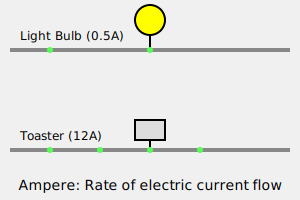

Chapter 1
OLD WORLD MATH
It is common knowledge that Mr. Einstein spent much of his life attempting to mathematically formulate unity of all things, and that he failed in this noble effort. There are various reasons for this failure, and lack of full knowledge of the actions of free falling bodies was the primary reason. He lacked accurate data - he lacked facts - he was doomed to fail.
There is now such heavy reliance on the erroneous equation E = mc2 by militarists in industry, politics, and science that questioning Einstein's very famous equation is viewed as an attack on their demi-god, and any "offender" is immediately attacked by those whose power and influence depends upon your continued trust in the promise of E = mc2. In reality, this promise is a lie, and anyone who has examined this equation knows it's in error. This presents an obvious question: if it is in error, then why do they cling to it ? In our view it is like a root from which has grown a plant called science, Science: a connected body of demonstrated truths or observed facts that are systematically organised to make general laws about that subject. It includes trustworthy methods to discover *new truths* about the subject technology Technology: the methods of *application* of a science as opposed to mere knowledge of the science and nuclear energyNuclear energy: the energy released during nuclear reactions, typically from splitting atoms (fission) or combining atomic nuclei (fusion). It's used to generate electricity in nuclear power plants. This plant in turn feeds a beast known as the military/industrial complex. Were anyone to unearth this evil root called E = mc2 , the plant would wither and the beast would starve. This is why no one dares question, and why the truth has remained hidden. To laymen we say - a lie quickly becomes complex, but the truth is clear and simple. We will now examine this jealously guarded root in the light of truth, and let the reader decide where logic lies.
Einstein used ergsErg: a very small unit of energy that measures an amount of work done, eg: to lift a fruit fly 1cm high it takes 10,000 ergs
as his value for energy. An erg is a value taken from the centimeter-gram-second system of measurements. Please take note of the term "gram", which indicates weight. An erg is defined as: a unit of energy or work equal to the work done by a force of one dyne
Dyne: a unit for measuring extremely small amounts of FORCE. In practical Physics and engineering the unit Newton is usually used because dynes become such large numbers.
Examples:
• Pressing a key on a keyboard: about 40,000 to 80,000 dynes
• Lifting a small paperclip: about 200,000 dynes (or 2 newtons)
• Lifting a 100kg bucket of cement up to the 30th floor of a skyscraper:
- In newtons= 980 newtons
- In dynes= 98,000,000 dynes
acting over a distance of one centimeter. From the start we can clearly see the "slippery" terminology applied as an aid to confusing the issue (and safeguarding the root). Work, energy, and force are all equated. We ask, are they indeed all equal ? It would appear they are if "science" needs them to be, but is this the truth ? Let us continue working our way through this maze and see where it leads.
One erg is a very small unit, so present day physicists use joules to place a value of E (energy).
One joule was declared to equal ten million ergs, but the question then was, is a joule potential energy (voltage) or is it work done (ampereAmpere: a standard unit for measuring the rate of flow of an electric current, meaning: how much electricity is flowing through a wire per unit of time (per second for example). A typical light bulb uses 0.5 ampere, a toaster uses about 12 amperes
 flow) ?
A coulomb is, by definition, the passing of one ampere of current across a given point in one second, and placed in concrete figures, a coulomb is a movement of 6.28 x 1018 electrons6.28 x 10^18 is approximately: 6.28 quintillion, or 6,280,000,000,000,000,000.
Electron: the negatively charged particles orbiting around the nucleus of an atom. The nucleus is made up of protons (positively charged units) plus neutrons. All three parts make up an atom. .
.
0.00000000000000000000000000000091095 kilograms
This number has 30 zeros after the decimal point before the significant digits begin, demonstrating just how incredibly light an electron is. kilograms.
9.1095 x 10-31 times 6.28 x 1018 electrons 6,280,000,000,000,000,000 electrons equals 5.708 x 10-12 kilograms 0.000000000005708 kilograms .
Science hopes you are completely confused by this time, but if we reduce this maze to a simple list, perhaps we will see more clearly.
- 10 million ergs = 1 joule
- 1 joule = 1 watt
- 1 watt = 1 ampere
- 1 ampere = 1 coulomb
- 1 coulomb = 6.28 x 1018 electrons
- 6.28 x 1018 electrons = 5.708 x 10-12 KILOGRAMS
What was Einstein referring to when he spoke of energy ? Weight ? To have weight there must be mass, and so Einstein's "E" is really mass, is it not ? A quick glance at Einstein's m (mass) is all that's required to reveal the basic error. Once again we are dealing with kilograms as the unit of measurement. On the equator at the surface of earth, one gram of mass weighs one gram. That very same gram of mass in deep space will have a weight value of zero, while on the surface of Jupiter this gram of mass weighs 2.5 grams. In applying these values, we find that nuclear technology should not be functional in open space - yet it is. We also find that on the surface of the planet Jupiter, a nuclear warhead should yield a 250% greater reaction – yet it won't. Clearly, reliance on the weight of m (mass) leads to gross errors in calculations, and errors in calculating lead to errors in judgment.
We are told that in E = mc2 Einstein sought to express the equivalence of energy and mass, and Mr. Einstein was as correct as limited facts would allow him to be. Energy and mass are equivalent, for "energy" IS mass. It is then explained that c2 comes into play only because of the "traditional" manner in which physicists calculate energy and mass, c2 is, in fact, a value more or less pulled out of thin air, with nothing to support it other than faulty calculations. Physicists know that it is equally correct to calculate on the basis of E = m, and to adjust the units of measurement to suit the situation. That this fact is avoided in favor of the astronomical figure represented by c2 (i.e.: 8.9874 x 1016 meters per second) should alert us to the fraud involved.
Even though the most vigorous nuclear reactions yield at most 1% of the promised energy, science holds onto the "carrot" of c2 as the promise of the future. In truth, if one were to be really precise, this mere 1% could "be dissected into the various "quasi" concepts currently lumped under the heading "energy", and the lie would "become even more apparent. Science has not only broken their promise - they have broken faith with the people.
In summation we should briefly address a question often put to us: if these technologies (electron/nuclear based) are wrong, then why do they function? The answer lies in the work of Maxwell, Faraday, and the other classical, true scientists, who performed hands-on experimentation to determine what worked. Modern theoretical scientists took this work and attempted to build a theory which would explain why things worked. When the militarists found a theory which worked to their advantage, progress in this area was halted, and it remains stagnant to this day. Data which does not fit the theory is simply ignored, and dissident researchers silenced. Those who attack our findings due to ignorance or fear of losing their power and influence must be reminded that Mr. Einstein, the guru of the atomic age, died trying to formulate unity. If he'd been satisfied with his original theory, then what was he looking for ?
Zirbes Enterprises
Project Stardust Team
June 1988
Reproduction and distribution of this material is approved and encouraged